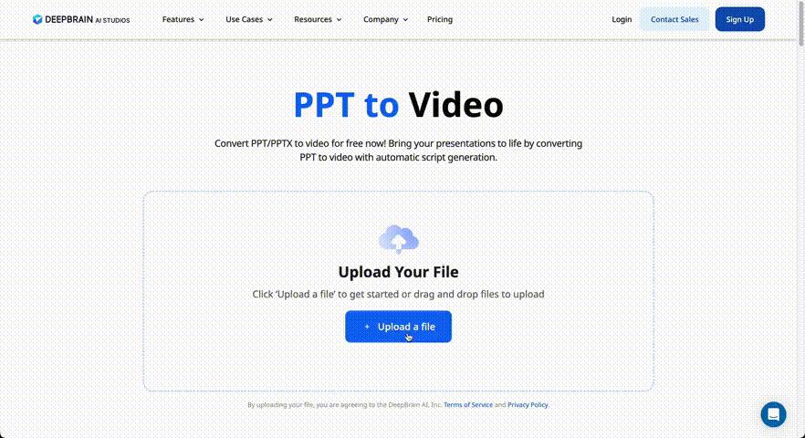
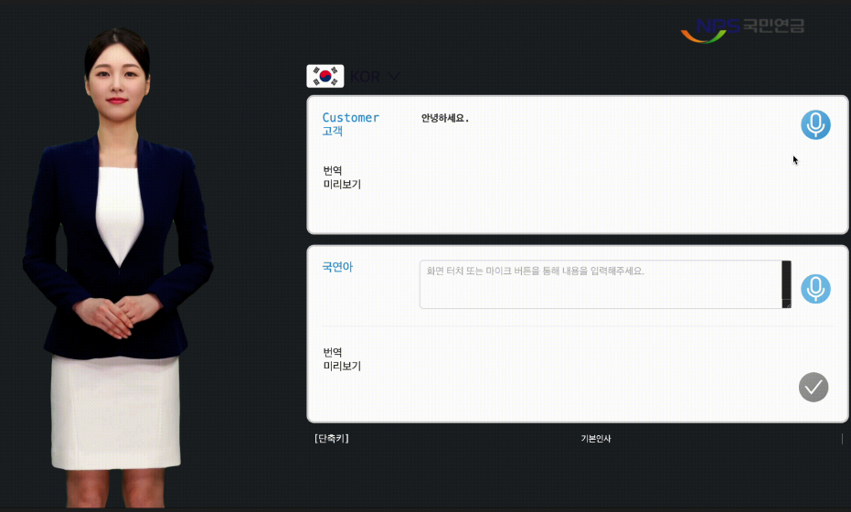
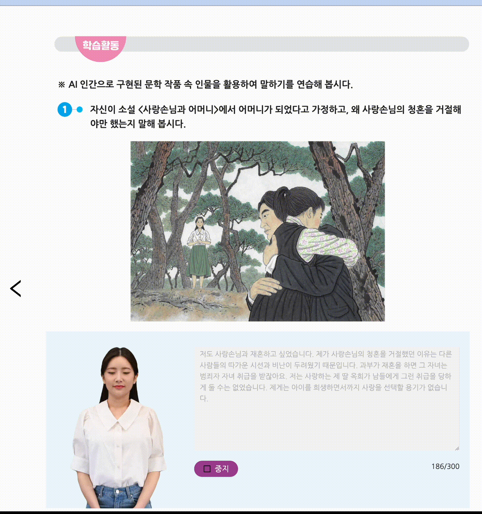
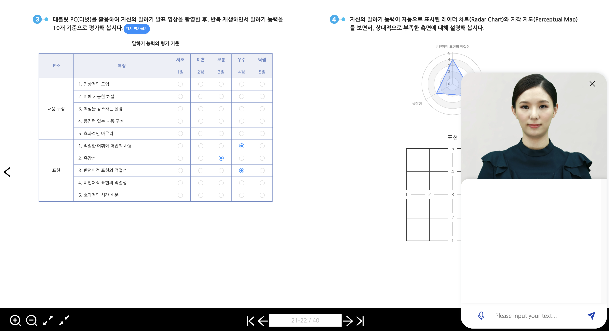
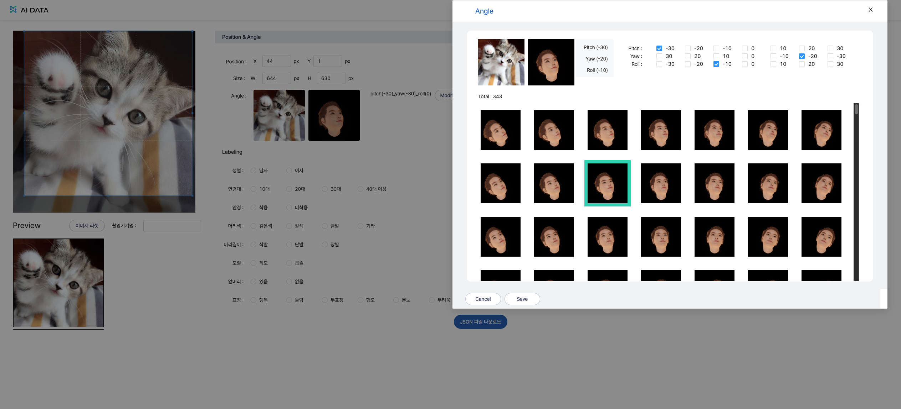
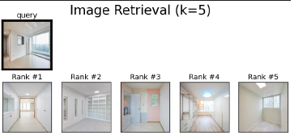

1. Outline
1.1. Profile
이름: 안동주 (An Dongju)
- 연락처: +82 10-6303-2184
- 이메일: andongjoo1@naver.com
- GitHub: https://github.com/dev-frankie
- LinkedIn: https://www.linkedin.com/in/adj0715/
측정으로 개선을 증명하는 4년차 프론트엔드 리드 개발자입니다. AI 스타트업에서 프론트엔드를 주력으로 백엔드·CI/CD까지 폭넓게 경험하며 10여 종의 제품을 개발·런칭했습니다. 계측 기반 성능 최적화 · 대규모 아키텍처 리팩토링 · AI 개발 프로세스 방법론에 강점이 있고, 단순 기능 구현을 넘어 팀이 지속적으로 성장·검증할 수 있는 구조와 자산화된 개발 방식을 만드는 데 기여합니다.
1.2. SKILLS
| 구분 | 상세 |
|---|---|
| Language | TypeScript, JavaScript, Python |
| Framework / Library | React 18, Next.js, Node.js |
| State | Zustand, Recoil, Redux, TanStack Query, RTK Query |
| UI / 시각화 | shadcn/ui, Storybook, Canvas · Fabric.js, D3.js · ECharts · Chart.js |
| Test / Quality | Vitest, Playwright, ESLint, Husky, Lighthouse CI, Sentry, OpenTelemetry |
| Infra / CI-CD | Docker, Kubernetes, Redis, AWS(S3 · SES · ElastiCache), Jenkins, ArgoCD, GitHub Actions |
| 기타 | OpenAPI 타입 · Zod 자동화, NextAuth, SSE, FSD 아키텍처, MCP, @datumo/agent-harness |
Skill Description
- 아키텍처 리팩토링 — FSD(Feature-Sliced Design), SSR/SSG/ISR, v→v 전면 리팩토링(Redux/RTK Query·SSR 도입), Middleware/BFF 패턴으로 변경 안전성과 확장성을 확보합니다.
- 계측 기반 성능 최적화 — Core Web Vitals, @next/bundle-analyzer, Lighthouse CI 예산 검사, User Timing API 자동 측정으로 "체감"이 아닌 수치로 개선을 증명합니다.
- 상태 관리 — Zustand·Recoil·Redux, TanStack Query/RTK Query로 복잡한 환경의 전역 상태와 서버 상태 캐시를 일관되게 관리합니다.
- 테스트 · 품질 자동화 — Vitest 단위 테스트 + Playwright E2E + GitHub Actions로 lint·format·typecheck·test·build를 merge 차단 게이트로 운영합니다.
- AI 개발 방법론 — 작성자(Claude) ≠ 검증자(Codex) 교차검증 하네스를 사내 NPM 패키지로 자산화해 팀 전체의 리뷰 일관성을 끌어올립니다.
1.3. EXPERIENCE SUMMARY
셀렉트스타 (Seoul, Korea) · 프론트엔드 파트 리더 (2025.07 ~ 현재)
Datumo Platform — LLM 평가 SaaS 프론트엔드 리드 개발
- 레거시 SSG → 동적 아키텍처 전환 및 Company/Workspace/Application 3계층 권한 체계 구축
- 전역 상태 Recoil → Zustand 429개 이관, OpenAPI → 타입·Zod schema-first 도입
- 실시간 협업(SSE) · Red Teaming · 대용량 테이블(TanStack Table) 등 핵심 기능 개발
- 계측 기반 성능 최적화(barrel 코드 스플리팅 규명, User Timing 자동 측정)
- AI 개발 방법론 자산화(@datumo/agent-harness NPM 패키지 배포)
- 테스트·CI·관측성 체계화 및 프론트엔드 파트 리딩(파트원 3명)
딥브레인 AI (Seoul, Korea) · 웹 개발 (2022.03 ~ 2025.03)
AI Studios v3 서비스 개발
- 대규모 데이터 실시간 통계 및 시각화
- 요금제 확장 및 구독 해지 방어 시스템 개발
- 캔버스 기반 에디터 신규 개발 및 유지보수
- 마케팅 도구를 활용한 전략 지원 및 캠페인
- 글로벌 다국어 지원 및 지역화 서비스
Account 서버 설계 및 백오피스 개발
- 자사 서비스 통합 로그인 npm 패키지 배포
- 로그인 인증 · 통합 어드민 · 백오피스 시스템 설계 및 개발
B2B · 대형 SI 프로젝트
- 월드비전 AI 시상영상 · KB증권 드림아바타 · 태블릿 AI 실시간 통역 · 서울시 교육청 AI 디지털 교과서 · 국민은행 금융비서 · 농협은행 AI 허브/Kiosk · AI 학습 데이터 라벨링·검수 플랫폼
Deepbuild Inc (Seoul, Korea) · ML Engineering Team (2021.07 ~ 2022.02)
Pinterior 서비스 개발 — 상권 데이터 분석, 인테리어 추천 모델 최적화 및 웹 서빙
2. WORK EXPERIENCE
2.1. 셀렉트스타 — Datumo Platform
셀렉트스타는 누적 투자 434억 규모의 AI 학습 데이터 구축 전문 기업으로, LLM 평가 SaaS Datumo Platform의 프론트엔드 리드 개발을 담당하고 있습니다. 단일 평가 도구(Eval)에서 Eval + Red Teaming + Console + Observability를 아우르는 플랫폼으로의 확장을 아키텍처 리팩토링과 핵심 기능 개발 양면에서 리드했습니다.
- 역할: 프론트엔드 파트 리더 (파트원 3명)
- Skills: TypeScript, Next.js 14→16, Zustand, TanStack Query, openapi-fetch · orval(zod), NextAuth, next-intl, Sentry, Vitest, Playwright, eslint-plugin-boundaries
2.1.1 레거시 SSG → 동적 아키텍처 전환 및 3계층 권한 체계
문제
- 레거시가 SSG(정적 생성) 기반이라 서버 사이드에서 인증 검증과 권한 기반 라우팅 제어가 구조적으로 불가능했습니다.
- 단일 평가 도구를 Company/Workspace 다계층 권한 플랫폼으로 확장하는 데 근본 제약이 있었습니다.
가정
- 정적 구조의 한계는 렌더링 방식이 아니라 서버에서 요청을 가로챌 수 없다는 데 있으므로, API Routes 기반 동적 구조 + Middleware(BFF)로 전환하면 인증 가드가 성립할 것으로 판단했습니다.
해결
- Next.js 14 → 16 업그레이드 후 SSG → API Routes 기반 동적 아키텍처로 전환
- NextAuth + Next.js Proxy(BFF)로 브라우저는 Next API Routes만 호출하고 플랫폼 API는 서버에서만 접근하도록 구성
- Company / Workspace / Application 3계층 권한(+슈퍼어드민) 라우팅 가드 설계·구현
- FSD(Feature-Sliced Design) 도입으로
app / views / widgets / features / entities / shared계층과 단방향 의존성 규칙 확립, public API(barrel) 규칙으로 임의 deep import 차단 — 총 67개 슬라이스(Entities 9 · Features 23 · Widgets 17 · Views 18), 슬라이스별 번들 크기 자동 추적
성과
- 정적 구조에서 불가능했던 인증 기반 라우팅 가드를 실현하여 서비스 보안성·확장성 확보
- 기능 수정 시 영향 범위를 FSD 레이어 내로 격리, 사이드이펙트 예측 가능성 확보
2.1.2 FSD 아키텍처 강제 및 전역 상태 이관
문제
- FSD 규칙은 문서로 존재했지만 강제력 격차가 컸습니다 —
feature → featureimport 약 39건, deep import 약 30건이 대부분 사람의 기억에 의존해 drift. - 전역 상태가 Recoil atom/atomFamily 429개(atom 427 + atomFamily 2)로 흩어져 흐름 파악이 어렵고, DevTools 미지원으로 디버깅 비용이 높았습니다.
가정
- 사람이 기억하는 규칙은 결국 drift하므로 ESLint로 경계를 강제해야 위반이 멈춘다고 봤습니다.
- 상태는 중앙 스토어 + DevTools로 추적 가능성 확보가 최우선이라 판단(atom 분산이 유지되는 Jotai가 아닌 Zustand 선택).
해결
eslint-plugin-boundaries로 FSD 레이어 의존 방향과 slice public API import를 강제(relative import까지 검사), 경계 검사 자체에 대한 테스트 추가- Recoil → Zustand 429개 이관 — Flux 단방향 + 중앙 스토어 + Redux DevTools(타임트래블). 기존 atom 인터페이스를 selector로 래핑해 소비처 변경을 최소화하며 도메인별 점진 이관
성과
feature → featureimport 39 → 0, 위반 시 PR 차단 → 문서 규칙에서 실행 규칙으로 전환- 전역 상태 추적·디버깅 효율 개선, 변경 영향 범위를 FSD 레이어 내로 격리
2.1.3 타입 안전성 시스템화 · API 계약 자동화
문제
strict: true였지만 type-aware ESLint 미사용(parserOptions.project: false)이라 타입 정보 기반 규칙이 전혀 돌지 않았습니다.- 타입 우회로:
as unknown as never이중 단언 53곳(프로덕션 38), non-null!약 72곳. 배열/Record 인덱스 접근이undefined를 반영하지 않음(noUncheckedIndexedAccessoff). - 손으로 유지하던 약 3,200줄
PlatformBackendPaths타입 계층의 경로 누락·느슨한requestBody(Record<string, unknown>)가 백엔드 계약과 drift.
가정
- 단순
strict플래그로는 부족 — 컴파일러가 타입 정보로 인덱스 접근·uncaught promise·불필요 단언까지 잡게 하면 실제 버그가 표면화되고, 계약은 스펙 원본에서 자동 생성해야 drift가 멈춘다.
해결
- type-aware ESLint(
projectService) 도입 +no-unsafe-*·no-floating-promises·no-unnecessary-type-assertion·switch-exhaustiveness-check를 error로 승격 noUncheckedIndexedAccess활성화 후 발생한 타입 오류 221건을 6개 디렉토리에 걸쳐 전수 해소 — 사용처마다 고치는 대신 변수 정의부에서 1회 가드하는 소스-가드 전략(예:Table.tsx가드 1개로 33건, columns 빌더 40 → 4)no-floating-promises방치 Promise 109건 triage(프로덕션 66건void처리),no-unnecessary-type-assertion125건 auto-fix(단, load-bearing 단언 오탐을 겪고 'auto-fix 후 tsc 검증 필수' 원칙 정립)as unknown as never53곳의 근본 원인을 수기 타입 계층으로 특정 →sanitize → orval(zod) → prettierOpenAPI 자동 생성 파이프라인 구축,GET /api/member/me응답 검증기 슬라이스로 반복 가능성 입증(agent:verify·review 모두 GREEN)
성과
- type-aware ESLint 도입 후 프로덕션
no-unsafe-*위반 7건에 불과함을 측정 —strict:true위에 실질 타입 안전성 확보 noUncheckedIndexedAccess221건 전수 해소, 브랜치 GREEN(tsc 0 · eslint clean) 유지, 손유지 3,200줄 계약을 스펙 자동 생성으로 대치 시작
2.1.4 실시간 협업 · Red Teaming · 대용량 테이블
문제
- LLM 평가는 수 분–수십 분이 걸리는 비동기 작업이라 진행 상태를 실시간으로 파악하기 어려웠습니다.
- 여러 사용자가 같은 평가를 동시에 다룰 때의 편집 충돌, 수천–수만 행 결과의 렌더링 성능이 과제였습니다.
가정
- 폴링의 낭비는 클라이언트가 서버에 계속 되묻는 구조에서 나오므로 서버 푸시(SSE)로 제거할 수 있고, 대용량 테이블은 무거운 그리드 라이브러리 대신 화면에 필요한 만큼만 DOM에 유지(headless + 가상화)하면 성능과 커스터마이징 자유도를 함께 얻을 것으로 봤습니다.
해결
- 실시간 협업 — Polling → SSE로 전환해 평가 진행을 실시간 스트리밍(불필요한 반복 요청 제거). 4개 named event(스냅샷·잡 진행·프레즌스·버전) + viewerSessionId 기반 echo suppression(자기 변경 제외) +
navigator.sendBeaconleave 신호로 active users 표시와 편집 버전 충돌 감지·최신 반영을 갖춘 공동 편집 구현 - Red Teaming — 공격셋 기반 자동 Red Teaming 플로우 + human-in-the-loop 채팅으로 평가 → 취약점 탐지 → 재현을 한 흐름으로 연결
- 대용량 테이블 — 무거운 그리드 라이브러리 의존을 제거하고 Headless(TanStack Table) + shadcn/ui로 가상화 · 2중 헤더 · rowspan/colspan 테이블을 직접 구현, 상세는 가상화 + 동적 컬럼(show/hide, 드래그앤드랍 순서 변경) 적용
- 대시보드 — D3 → ECharts/Recharts 전환 + 드래그앤드랍 그리드로 사용자가 위젯을 배치하는 커스텀 대시보드 제공
성과
- 평가 진행이 실시간 반영되고 폴링 대비 요청 수가 크게 감소, 다중 사용자가 충돌 없이 협업
- 가상화는 도입에서 끝내지 않고 손익분기점을 합성 데이터로 실측했습니다. 렌더되는
<tr>은 데이터 양과 무관하게 22개로 상수이고, 이 상수가 이득이 되는 지점은 지표마다 달랐습니다 — 초기 렌더는 1,000행부터(677 → 90ms, 7.5배), 스크롤은 5,000행부터(15.6 → 63fps, long task 30 → 0건)이고, 50,000행에서는 DOM 1,400,191 → 808노드 · 힙 2,508 → 268MB · 페인트 31.2초 → 0.22초 - 반대로 현재 페이지 크기(100행) 구간에서는 행당 payload가 클 때만 초기 렌더가 개선되고(47KB에서 455 → 163ms) 스크롤 FPS는 118 → 76으로 오히려 나빠지는 트레이드오프임을 확인해, 처음에 근거로 적었던 "DOM 46 → 18행" 문장을 철회하고 이 수치로 대체했습니다
2.1.5 계측 기반 페이지 성능 최적화
문제
- 초기 로딩 지연·Layout Shift로 사용성이 저하됐고, 차트 라이브러리
recharts(282.5KB parsed / 116.5KB gzip)가 대시보드를 열지도 않는 사용자에게까지 공유 초기 번들로 배달됐습니다. - Task 진입(평가 Run 조회)은 7-way 조인이 필요해 목록·상세가 느렸고, 성능을 지속 측정·감시할 체계가 없었습니다.
가정
- 처음엔 대시보드 컴포넌트를
dynamic(ssr:false)로 지연하면 분리될 것으로 가정했으나 리빌드 후 청크 콘텐츠 해시가 바이트 동일(6333-3f3bb7b9…before=after)이라 가설 기각 — 진범은 barrel(widgets/.../index.ts)의 정적 재수출로, ModalRegister(앱 부팅) 등 6개 소비처가 recharts를 정적 그래프로 끌어들이고 있었습니다. - "체감이 빨라졌다"는 주장이 아니라 ms 단위 계측으로 증명해야 한다고 봤습니다.
해결
- barrel 재수출 제거 + 소비처 deep 경로 dynamic import로 정적 경로를 완전히 차단(변경 파일 2개).
build-manifest(공유 초기 청크)에서 recharts 추방 +react-loadable-manifest에 동적 청크(2560·6723) 등록으로 async임을 실측 - Task 진입 최적화 — 카드 호버 시점 prefetch(hover 인텐트) + SSR HydrationBoundary +
@tanstack/react-virtual가상화. Playwright + User Timing API로 prefetch·virtualize 4조합 × 4 Task × 5회 median(총 80샘플, 약 9.4분) 자동 측정해 수치로 검증 - 이미지·폰트 사이즈 예약 + 스켈레톤으로 Layout Shift 방지, 정적 파일 S3 업로드 + CDN 캐싱
perf:rank번들 랭킹(First-party·서드파티·청크 3섹션 + 중복 버전 감지) + Lighthouse median(라우트당 3회) 파이프라인 구축,perf:bundle-diff로 main 번들 baseline 대비 PR별 gzip·패키지별 증감을 diff하고 Top 15 패키지 랭킹 + Lighthouse 결과를 PR 스티키 코멘트로 자동 게시(GitHub Actions)
성과
- recharts 116.5KB(gzip)를 초기·공유 번들에서 제거 — 총 번들은 스플릿 오버헤드로 +2KB지만 라우트 First Load JS는 −117KB (총합이 아닌 초기 로드로 판단)
- Task 진입 472ms → 323ms(약 32%↓, 4케이스 평균), 최악 케이스(llm-as-judge)는 623ms → 148ms(약 4배), 최적화 대상 라우트(Task Results) Lighthouse 성능 99점 · LCP 0.9s · CLS 0 (2026-07 실측 · 로그인/가입 98~100점). 다만 아직 root 57점 · workspace-info 47점이 남아 있습니다. 라우트별 예산은 PR마다 검사하되 현재는
continue-on-error로 경고 단계이고, 남은 라우트의 기준을 실측으로 확정한 뒤 차단으로 승격하는 순서로 두었습니다 - 80샘플 자동 측정 + 번들 diff CI로 성능 회귀를 PR 단계에서 자동 감지, "번들 최적화는 총합이 아니라 라우트별 초기 로드로 판단"을 팀 규칙(
fsd-architecture.mdc·CLAUDE.md)으로 문서화
2.1.6 Sentry 관측성 고도화
문제
- 에러 계측이
captureException단 1곳(global-error.tsx)뿐이고 환경·릴리즈·샘플링·노이즈 필터가 전무해, 이슈만으로는 원인 추적이 불가능했습니다. sendDefaultPii: true로 PII가 전량 전송되고tracesSampleRate: 1로 트레이스를 전량 수집(quota·비용 위험).SENTRY_AUTH_TOKEN이.gitignore누락(점 없는 파일명)으로 커밋돼 여러 원격 브랜치에 노출됐습니다.
가정
- 이슈 하나로 원인까지 추적하려면 에러를 API 단위로 그룹핑하고, 노이즈는 메시지 문자열이 아니라 에러 code 기반으로 걸러야 다국어·문구 변경에도 필터가 깨지지 않는다고 봤습니다.
해결
- 중앙 집중 계측 — TanStack Query
QueryCache/MutationCache의onError단일 길목에서 전 서버 요청 에러에 Scope(level·tags·context·fingerprint)를 자동 부착(계측 지점 1곳 → 전 API 커버 단일 진입점) - 커스텀 fingerprint로 그룹화 축을 StackTrace → API(method+endpoint+status+code)로 고정, 이슈 제목에 상태코드·메서드·BFF 경로 + 가변 세그먼트를
{id}로 정규화(예:[500] GET /api/applications/{id}/eval-runs/{id}/tasks/{id}) - 노이즈 3계층 필터(Inbound Filters · beforeSend · SKIP_RULES) —
PlatformApiError.code기반 정밀 skip + BFF 특성 반영(클라 런타임 네트워크 throw는 drop, BFF→백엔드 실패는 신호로 유지) - 4단계 Level 체계(fatal/error/warning/breadcrumb), Tags/Context/
setUser(id+email)적재,tracesSampleRate 1 → tracesSampler샘플링, environment(dev/qa/prod/onprem)·release=git SHA마킹,sendDefaultPiiPII를 scrub 모듈로 스크럽 - 커밋된
SENTRY_AUTH_TOKEN발견 → 토큰 재발급·.gitignore수정·추적 해제 무중단 조치
성과
- 재현 없이 원인 추적 가능한 관측 도구로 전환, 동일 API 에러를 하나로 묶어 이슈 노이즈 제거, 배포별 회귀(release) 자동 계산 기반 확보, PII 유출 리스크 제거
2.1.7 i18n 자동화 파이프라인
문제
- 문구 반영 시 개발자가
en/ko/ja.json+ TSV를 수동 편집했고, merge/pull 시 영어가 ko/ja로 역류해 상시 '영어 회귀 복구용 응급 스크립트'가 필요했으며 번역 충돌이 잦았습니다.
가정
- 번역 키 값에 소유권을 단일화(한 셀에 주인 하나) + 단방향 흐름을 설계하면 충돌·역류가 구조적으로 사라진다고 봤습니다.
해결
- next-intl(en/ko/ja) 기반, leaf 세그먼트를 곧 영어 원문으로 두는 키 컨벤션 +
en.json을 코드에서 자동 생성(build-en) → 개발자는t()만 작성 - 변수 바인딩 기반 정적 추출기(
extract-keys)로 한 파일에 네임스페이스가 여럿인 경우(전체 30%)도t()/t.rich()를 정확히 매핑, dev watcher(instrumentation.ts → build-en --watch, write-if-changed로 불필요 리로드 방지) - 안 쓰는 키만 안전 제거하는
prune을 4중 조건(en 존재 ∧ 코드 리터럴 부재 ∧ base 부재 ∧ 동적 네임스페이스 아님)으로 설계,--dry-run으로 동적 dispatch 키 오삭제 사전 검출 - GitHub Actions 자동화(i18n-sync: 키 push·promote / i18n-pull: sync PR 생성), 시트 '번역 완료' 버튼을 Apps Script
repository_dispatch로 CI 연동, CI의 라이브 시트 pull을build-en --check게이트로 교체(결정적 빌드), 런타임 en deep-merge 폴백으로 미번역 키의 raw key 노출 방지
성과
- 개발자는
t()만·번역자는 ko/ja만·나머지는 CI가 자동 처리하는 파이프라인 확립, 번역 머지 충돌 0건(구조적 제거), 영어 역류 복구 응급 스크립트 제거, 약 1,300키를 결정적 빌드로 관리
2.1.8 AI 개발 방법론 자산화 — @datumo/agent-harness
문제
- AI 에이전트가 "테스트 통과, 문제없음"이라 보고할 때 누가 검증하나. self-review는 같은 모델·같은 컨텍스트라 같은 맹점을 두 번 통과(동조검증)시킵니다.
가정
- 코드리뷰의 Reviewer ≠ Assignee 원리를 이식해 작성자(Claude) ≠ 검증자(Codex) 로 분리하면 교차검증이 성립한다고 봤습니다. 검증자 프롬프트는 버전관리로 고정해야 작성자가 "이건 검토하지 마" 식으로 조작할 수 없습니다.
해결
- typecheck·eslint·unit·i18n 4종 기계 게이트(
pnpm agent:verify)로 두 에이전트가 같은 명령으로 동일 결과를 재현하게 표준화. 게이트는depInstalled/hasPackageScript기반 자동 skip(동일 config로 front 4게이트·admin 2게이트 자동 적용) - 버전관리된 고정 프롬프트로 Codex 호출, 검증자 입력을 handoff·diff·verify 3개로 제한해 작성자의 대화 히스토리 상속을 차단, S1/S2/S3 severity verdict + 2라운드 상한·사람 에스컬레이션의 3중 수렴 장치, codegraph MCP를 검증자에 주입해 변경 blast-radius를 인지한 리뷰
- 공유 npm 패키지
@datumo/agent-harness로 추출(12개 파일·8단계 루프, verify·review·plan-review·init·sync 5개 CLI + Claude Code Stop 훅) → front·admin 다중 레포 배포, drift-aware sync(managed 파일 해시 기록, 로컬 수정분은 경고만)로 정본AGENTS.md를 컴파일해 30여 종 에이전트가 동일 규칙 참조
성과
- 도입 첫날 하네스가 자기 자신의 결함 12건(typecheck 크래시 시 에러 0줄이라 통과로 오판하던 false GREEN 등)을 교차검증으로 규명
- 규칙·프롬프트·게이트를 한 곳에서 유지보수하고
sync로 전 레포 전파해 복붙 드리프트 제거
교훈: 신뢰는 검증 주체의 성능이 아니라 작성자와 검증자의 분리에서 나온다.
2.1.9 품질 · CI · TDD 게이트 및 파트 리딩
문제
- 레거시(
llm-eval-front)는 실행 가능한 테스트가 0개, 소스 lint만 해도 56 errors / 710 warnings,eslint.ignoreDuringBuilds로 오류가 있어도 배포되는 구조라 품질이 개인 숙련도·수동 QA에 전적으로 의존했습니다.
가정
- 품질은 개인의 주의가 아니라 merge를 막는 차단 게이트로 시스템화해야 무너지지 않고, "테스트가 있음"이 아니라 커버리지 미달 시 PR이 막히는 래칫이어야 실효가 있다고 봤습니다.
해결
- 파트원(3명) 업무 분배 · 코드 리뷰 · 기술 전파를 담당하고, PO와 요구사항을 정의·조율
- 순수 로직 TDD로 테스트를 파일 68 → 95(+27) · 케이스 493 → 633(+140) 백필(계약/경계/빈 입력/에러 경로 중심), QA 버그 수정 시 테스트 시나리오 업데이트 필수화
- 커버리지 게이트 —
all:true로 테스트 0개 파일이 분모에서 빠지는 허위 커버리지를 차단(정직한 floor 38%에서 시작), include를lib/**·shared/api/error/**로 한정해 순수 로직 바닥을 계측, CI를pnpm test → test:coverage로 교체해 미달 시 실제 빌드 차단(래칫). 실측 커버리지 Functions 91% · Branches 79% · Statements/Lines 85% - GitHub Actions로 lint · format · typecheck · unit coverage · build를 merge 차단 게이트로 실행, 테스트 전략 문서(
docs/testing-strategy.md)로 테스트 피라미드 명문화 .env.{dev,dev2,qa,prod,onprem}5개 환경 매트릭스 + 고객사 대응 온프레미스 standalone Docker 이미지로 SaaS·온프레미스 동시 지원
성과
- 실행 테스트 0 → 633 케이스, 소스 lint 56 errors → 0, 오류가 있어도 배포되던 구조에서 merge 전 커버리지 게이트로 차단하는 체계로 전환
- 사내 프론트엔드 레포 성숙도 평가 4.0 → 6.5/10(테스트·CI·아키텍처 축 개선), 팀 공통 컨벤션·온보딩 기준 정립
2.2. 딥브레인 AI — AI Studios v3
AI Studios는 인공지능 합성 기술을 기반으로 사용자가 AI 가상인간을 활용해 개인화된 영상 콘텐츠를 제작하는 SaaS 플랫폼입니다. v2 → v3 전면 리팩토링(Redux · RTK Query)으로 SSR · 디바운싱 · 코드 스플리팅을 적용해 FCP/LCP/TTI 평균 30%+ 단축을 달성했습니다.
2.2.1 대규모 데이터 실시간 통계 및 시각화
1,000만 건 이상의 프로젝트 데이터를 실시간으로 조회 가능한 통계 대시보드 및 데일리 리포트 자동화 시스템을 구축했습니다.
- 기여도: 100%
- Skills: Next.js, Kubernetes, Chart.js, MongoDB
문제
- 유저 유입·프로젝트 사용 현황·에러율 등 통계를 실시간으로 파악하기 어려웠습니다.
- 기관별·팀별·개인별 분석 데이터가 없어 운영·의사결정에 어려움이 있었습니다.
- 1,000만 건 이상 데이터를 기간별로 조회할 때마다 집계가 3초 이상 걸려 실시간 분석이 어려웠습니다.
가정
- 조회 시점에 raw를 매번 집계하는 게 병목이므로, 사전 집계 + 배치로 조회를 단순 read로 바꾸면 응답이 상수 시간에 가까워질 것으로 봤습니다.
해결
- 쿠버네티스 기반 Cron 배치로 매일 기관/팀/개인별 프로젝트·유저 로그를 수집하고 로우 데이터를 정제, 운영진에게 메일 리포트 자동 발송
- MongoDB 사전 집계 API로 통계 대시보드를 개발해 실시간 조회·분석 지원, Chart.js 코드 스플리팅으로 초기 번들 축소
성과
- FCP 1.2s → 0.4s(약 67%↓), LCP 4.5s → 2.2s(약 51%↓), 조회 응답 3s+ → 1s 미만
- 데일리 수집·리포트 시스템 구축으로 운영팀의 데이터 기반 의사결정·전략 수립에 기여
2.2.2 요금제 확장 및 구독 해지 방어 시스템
- 기여도: 100%
- Skills: Next.js, Kubernetes, Stripe
문제
- 레거시 요금제와 신규 요금제를 병행하면서 요금제 간 기능·권한 관리 로직이 혼재해 코드 복잡도가 크게 증가했습니다.
- 요금제별 권한·접근 제어가 명확히 구분되지 않아 기능이 불필요하게 중복 구현됐습니다.
- 구독 해지 과정에서 고객 피드백을 수집·분석할 체계가 없었습니다.
가정
- 권한 분기가 코드에 흩어진 게 문제이므로 권한을 데이터로 모델링하고 훅으로 추상화하면 중복이 사라지고, 해지는 단일 확인창이 아니라 단계별 방어 퍼널로 붙잡을 여지가 있다고 봤습니다.
해결
- 각 기능별 접근 권한 필드를 DB에 추가해 자동화된 권한 관리 체계 구축, 요금제 권한을 가져오는 커스텀 훅 개발로 중복 코드 제거
- 구독/업그레이드/다운그레이드 기준을 동적으로 판단하는 매트릭스 설계
- 구독 해지 방어 퍼널(설문으로 해지 이유 실시간 수집 → 크레딧/할인 리워드 추천 → 유지 유도) + 해지 히스토리 관리 페이지 구축, Stripe 연동
성과
- 레거시 요금제를 유지하면서 신규 요금제 확장으로 약 2개월간 구독자 300명 증가
- 요금제별 권한·접근 제어 개선으로 중복 코드 대폭 제거, 유지보수·확장성 향상
- 구독 해지 방어 시스템으로 고객 이탈 방지 및 해지 히스토리 기반 개선 방안 마련
2.2.3 캔버스 기반 에디터 신규 개발 및 유지보수
- 기여도: 100%
- Skills: Next.js, Fabric.js, Redux, Canvas, FFmpeg
기능 요구사항 1 — 텍스트 입력으로 생성형 AI 이미지/비디오를 생성해 웹 에디터에 연동
문제 / 가정
- 이미지·비디오는 생성 시간이 일정하지 않아 즉시 응답을 받을 수 없고, 캔버스 내 미디어 객체 관리가 복잡했습니다. → Job 리스트를 주기적 인터벌로 폴링해 비동기 반영하면 UX를 막지 않을 것으로 봤습니다.
해결
- 사용자 텍스트를 입력받아 이미지/비디오를 생성하는 API를 연동하고 Job 리스트를 주기적 인터벌로 fetching
- ChatGPT 연동으로 미디어 생성 힌트 제공, Fabric.js로 생성 미디어 속성 분석 후 캔버스에 추가하고 Redux 미들웨어로 DB 저장

성과 — 텍스트 입력만으로 고품질 이미지/비디오를 생성해 사용자 편의성을 대폭 향상
기능 요구사항 2 — 에셋 정렬 기준을 손쉽게 확인하는 에디터 내 스냅 가이드 제공
문제 / 가정
- 에셋 추가 시 오브젝트 간 정렬·간격 조절 로직이 복잡하고, 위치 변경마다 실시간 좌표 계산·렌더링이 필요했습니다. → 병목은 매 프레임 재계산에 있으니 드래그 시작 시 1회 계산 + 축별 후보 축소로 완화할 수 있다고 봤습니다.
해결
- 각 오브젝트의 시작/중앙/끝 좌표를 배열로 관리하고, 선택 오브젝트 좌표와 비교해 겹치는 기준선을 감지·가상 렌더링, 임계값 이내 접근 시 자동 정렬(스냅) 적용
- 좌표 비교 오버헤드를 드래그 시작 시 1회 캐싱 + 축별 사전 필터링 + 가이드라인 DOM 렌더 분리로 완화해 실시간 피드백 제공

성과 — 대규모 에셋에서도 정렬 작업을 직관적·즉각적으로 만들어 편집 흐름 개선
기능 요구사항 3 — 비디오 에셋 편집(트림) 기능으로 콘텐츠 제작 효율 향상
문제 / 가정
- 비디오 썸네일 추출 시 서버 부하가 우려됐고, 비디오 변경 시 캔버스·DB 동시 업데이트와 이동/사이즈/트림 상호작용에서 사이드이펙트가 발생했습니다.
해결
- FFmpeg으로 썸네일 추출 속도 저하 해결, 슬라이더 기반 구간 설정 제공, 트림 시 이전 상태를 Redux·DB에 저장해 복구 가능
- 트림 모드 진입 시 Video Element로 실시간 재생·구간 미리보기, Canvas/Redux/Video Element 연동으로 편집 상태 일관 관리, 트림 종료 후 썸네일 재생성

성과 — 비디오 트림·썸네일 미리보기·플레이 제공으로 작업 효율 증대
기능 요구사항 4 — 에셋 툴바 컴포넌트 설계 및 구현
문제 / 가정
- 에셋마다 지원 기능이 달라 툴바를 동적으로 렌더링해야 하고, 제한된 화면 공간에서 일부 기능이 가려졌습니다. → 특정 크기 이하에선 Floating 모드 전환이 필요하다고 봤습니다.
해결
useResizeObserver로 툴바·화면 크기를 실시간 모니터링해 임계값 이하 시 자동 Floating 모드 전환- React Portal로 툴바를 최상위 DOM에 렌더링해 화면에서 사라지지 않도록 위치 동적 조정

기능 요구사항 5 — 홈페이지에서 AI Studios 에디터/기능 연동 (Powerpoint to AI Video, AI Generator, URL to Video, Audio/Video Converter)
문제 / 가정
- 웹플로우 기반 홈페이지와 Next.js 기반 AI Studios 기능의 통합, 쿼리 파라미터 전송 시 보안, 원활한 통신 보장이 과제였습니다.
해결 (기여도: 스크립트 삽입 100% / 기능 연동 30%)
- AI Studios: 홈페이지 origin 허용 설정, 홈페이지용 API 정의·연동
- 홈페이지: HTML·JavaScript 웹플로우 커스텀 코드 삽입

성과 — 홈페이지 방문자의 AI Studios 대거 유입, 추가 기능 확장 기반(베이스 코드) 마련
2.2.4 마케팅 도구를 활용한 전략 지원 및 캠페인
문제
- 사업 전략 분석 체계·유저 행동 로그 등 근거 데이터가 부족했고, 비디오 합성 시간이 길어 결과를 못 본 사용자가 이탈했으며, 유저별 최적화 이메일 캠페인이 미흡했습니다.
해결
- 이벤트 트래킹·분석 — GA4, Amplitude, Baidu Analytics로 태그 설정·행동 세분화·구매/전환 추적
- HubSpot 연동 — 커스터마이징 입력 폼으로 사용자 데이터를 수집해 CRM 연동, 리드 분석 지원
- G2 인앱 리뷰 연동 — 사용자별 G2 API 키 발급 및 리뷰 데이터 동적 임베딩
- 합성 완료 알림 — Service Worker 웹 푸시 + AWS SES 합성 완료 메일 발송
- A/B 테스트·데모 퍼널 — 신규/기존 유저 대상 A/B 테스트로 전환율 높은 데모 페이지 도출
- 드립 이메일 캠페인 — 쿠버네티스 기반 메일 발송 자동화, 유저 그룹별 맞춤 이메일·추적
- 설문 기반 대시보드 개선 — 회원가입 시 설문으로 대시보드 최적화
성과
- 데이터 기반 분석 체계 구축으로 마케팅 의사결정 지원, GA4·Amplitude 도입으로 타겟 마케팅 정밀도 향상
- HubSpot·G2 연동으로 리드 분석·전환율 기여, 웹 푸시·이메일 알림으로 제작 완료 후 재방문율 증가, 드립 캠페인으로 구독 유지·재가입률 향상
2.2.5 글로벌 다국어 지원 및 지역화 서비스
문제
- 다국적 사용자 대응을 위해 다국어·지역화가 필요했고, 국가별 로그인·결제 수단 등 특수 요구사항과 수기 번역 관리의 비효율이 있었습니다.
해결
- next-i18next로 다국어 번역·언어 전환 구현, 언어별 텍스트 길이를 고려한 반응형 UI로 핵심 컴포넌트 일관성 확보
- 리전 커스터마이징 — 중국 시장 위챗 로그인·알리페이 등 특화 기능 개발, 리전별 기능 제한 적용
- 번역 키·언어 매핑을 Google Sheet ↔ JSON으로 체계 관리하고 Node.js 스크립트로 워크플로우 자동화
성과
- 다국어·국가별 맞춤화로 글로벌 사용자 경험 개선, 번역 자동화로 작업 시간 단축, 중국 등 폐쇄적 시장에 효과적으로 진입
2.3. 딥브레인 AI — Account 서버 · 백오피스
2.3.1 자사 서비스 통합 로그인 모듈 패키지
문제
- 자사 서비스별 로그인 방식이 달라 사용자 경험이 단절되고, 서비스마다 인증을 중복 구현하면서 개발 효율이 저하됐습니다.
해결
- NextAuth 기반 OAuth 로그인 모듈을 npm 패키지
@deepbrain/next-auth-account로 개발·배포(설치만으로 적용, Atomic Design) - 6종 소셜 로그인(Google · MS · Apple · Facebook · WeChat
snsapi_login· Alipay RSA-SHA256 커스텀 서명) 통합, Redis 싱글턴 세션으로 서비스 간 SSO 구현
성과
- 통합 인증으로 유지보수 간소화·개발 생산성 향상, 소셜 로그인으로 신규 유입 증가, SSO로 서비스 간 재로그인 제거
2.3.2 로그인 인증 · 어드민 백오피스 서버
요구사항 — 로그인 인증 중앙 서버 + 기업/부서/사용자/AI 리소스 관리 어드민 시스템
해결
- 회원 비즈니스 로직(Facade 패턴), Redis 기반 중복 로그인 방지(유저 key 관리), 탈퇴 후 30일 경과 계정 자동 삭제 CRON 배치
- 기업/부서/멤버 통합 관리 어드민 페이지(관리자 권한별 기능), HOC 패턴 권한별 컴포넌트 계층화
- AI Voice 리소스 관리(샘플 보이스 API·입력 폼), AI Avatar 리소스 관리(Fabric.js 시각 에디터로 좌표 편집), 사용자 정의 단어사전(치환 기능)
성과 — 통합 어드민으로 데이터 관리 효율·관리자 편의 향상, SSO 통합 인증 서버 운영
2.4. 딥브레인 AI — B2B · 대형 SI 프로젝트
2.4.1 월드비전 꿈엽서 그리기대회 AI 시상영상 (2023, 2024)
문제 — 매년 수만 건의 수상작을 AI 비디오로 빠르고 효율적으로 제작할 시스템이 필요
해결 — 대규모 수상작을 빠르게 AI 비디오로 합성하는 엑셀 기반 합성 시스템 설계·개발, Job 스케줄링으로 프로세스 효율화, 합성 진행 상황 모니터링 프로그램 개발
성과 — 자동화로 수작업 부담 경감 및 제작 속도·품질 확보
2.4.2 KB증권 드림아바타 PoC
개요 — 사진·목소리를 업로드하면 AI 명함을 생성하는 웹 애플리케이션 (사진·음성 업로드 → AI 분석·학습 → AI 명함 생성) · 관련뉴스
해결
- 사진 업로드 시 자동 얼굴 인식 바운딩 박스 생성 + 사용자가 위치·영역 조정으로 정확한 얼굴 좌표 지정
- 자사 AI 합성 서버와 API 통합으로 사진·음성 데이터를 결합해 말하는 명함 영상 생성·제공
성과 — 사진·음성 기반 개인화된 AI 명함을 웹 애플리케이션으로 제공
2.4.3 태블릿 AI 실시간 통역 서비스
개요 — AI 기반 실시간 다국어 통역 서비스
해결
- 웹 SDK 연동·제어로 실시간 AI 아나운서 구현 및 음성 합성, ChatGPT API 기반 번역(대화 이력 저장으로 문맥 반영 + 질의응답)
- Google·Azure STT API로 10개국 이상 언어 지원 + 자사 AI 모델 보이스 TTS, 배경·모델·로고 등 템플릿화
- SDK 지연 로드로 초기 로드 최적화 → TTI 7.6s → 4.3s(약 43%↓)

성과 — 실시간 다국어 통역으로 외국인 사용자 편의성 향상, ChatGPT 연동 최적화로 번역 정확도·응답 속도 개선
2.4.4 서울시 교육청 AI 디지털 교과서
개요 — 기존 E-book 교과서에 AI 기반 질의응답(AI 교수님) 기능을 더한 실험적 프로토타입
해결
- 웹 기반 E-book 설계·구현(교과 퍼블리싱, 확대/축소, 화면 전환, 스크롤 모드, 글꼴·크기 조절)
- AI SDK·챗봇 연동으로 AI 질의응답 구현, 텍스트 프롬프터(슬라이드 배속·빠른 이동·되감기, 확대/축소 가독성 최적화)



성과 — 2023 디지털 러닝페스티벌에 서울시교육청 소속으로 참여, AI 디지털 교과서의 새로운 가능성 제시
2.4.5 국민은행 금융비서 프로젝트
- 자사 관리자 기능을 On-premise 형태로 탑재하여 보안성·독립성 강화
- 약 13억 규모의 대형 프로젝트
- 관련기사
2.4.6 농협은행 AI 허브 플랫폼 · Kiosk
개요 — 약 20억 규모의 대형 프로젝트로, AI Studios 기능을 농협 포털에 탑재하고 홍보용 AI Kiosk를 개발
해결
- On-Premise 관리자 기능 — 자사 관리자 기능을 On-Premise로 탑재해 보안성·독립성 강화
- AI Kiosk —
tensorflow-models/posenet으로 포즈 감지(정면 판별), 입장 시 단계별 안내 후 기념 사진 촬영 → AI로 모자이크 풍 변환 →node-printer로 폴라로이드 즉시 출력 - 음성 인식 — KT와 협업해 STT 연동
관련기사 — 농협
성과 — AI Kiosk로 사용자 경험 개선·혁신 서비스 제공, On-Premise 관리자 기능으로 운영 효율 증대
2.4.7 AI 학습용 데이터 라벨링 · 검수 플랫폼
개요 — 한국인 얼굴 합성을 위한 발화 모습 이미지 연구 데이터 수집 프로젝트 (약 20억 규모 정부과제)
문제
- 대규모 학습용 얼굴 데이터 10만여 장 이상 확보 필요
- 자사 AI 모델의 라벨링 정확도 미흡으로 인한 데이터 품질 문제
- AI 모델이 라벨링한 로우 데이터를 작업자가 쉽게 검수·보정할 플랫폼 필요
해결
- 이미지 자동 라벨링 — 매일 NAS에 업로드되는 이미지를 자동 처리하여 얼굴(눈·코·입) 좌표, 머리 색상, 곱슬/직모, 성별 등 속성 추출 Inference API 자동 실행
- 검수·보정 툴 — 결과값 검토·보정 툴(얼굴 바운딩 조절·확대·crop), 교차 검증 로직으로 동일 이미지 반복 검수 방지, 관리자 승인된 데이터만 NAS 재업로드

성과 — 자동화로 작업자 수작업 시간 대폭 단축, 검수·보정 툴로 데이터 정확도 향상 및 학습용 이미지 10만 장 이상 제작
2.5. Deepbuild Inc — ML Engineering Team
(2021.07 ~ 2022.02)
2.5.1 인테리어 플랫폼 Pinterior 개발
문제 — 유저가 특정 상권에 적합한 인테리어 정보를 제공받지 못하고, 인테리어 디자인 추천 기능이 부재했습니다.
해결
- 상권 정보 데이터 분석 — 지역·날짜·성별·나이·이동반경 등으로 특정 시간대 유동 인구 예측 및 상권 정보 제공
- 인테리어 추천 — 이미지 평점·사용자 샘플 평점 기반 GNN 추천 시스템 모델 최적화, Auto Encoder 기반 유사 인테리어 추천 구현
- AI 모델 서빙 — Flask 기반 서버로 실시간 추천 결과 제공

성과
- 상권 데이터 분석 기반 맞춤형 인테리어 추천 시스템 구축, AI 모델 최적화로 추천 정확도·사용자 만족도 증가, 실시간 추천 API 개발·배포 및 상용 서비스 적용